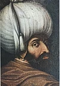
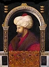
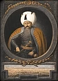
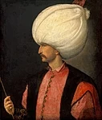
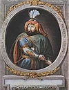
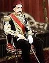

EN HIZLI PADİŞAH
YILDIRIM BEYAZID
Osmanlı Devleti'nin 4'üncü sultanı Yıldırım Bayezid tam 619 yıl önce 8 Mart 1403 yılında Akşehir'de vefat etti. Babası 1. Murad'ın 1. Kosova Savaşı'nda 1389'da şehit edilmesinin ardından tahta geçen Bayezid'e, seri bir şekilde at kullanması, savaşlarda çok hızlı manevralar yapabilmesi, ani ve süratli fetihleri dolayısıyla "Yıldırım" lakabı verildi.
Anadolu Türk birliğinin sağlanması için çalışan ve birçok beyliği Osmanlı'ya katan Bayezid, 1396'da Niğbolu Savaşı'nda, Avrupa devletlerinin ordularından oluşan Haçlı ordusunu yenerek önemli bir zafer kazandı. En büyük ideali İstanbul'u fethetmek olan ve öncelikle deniz yardımının kesilmesi gerektiği düşüncesiyle İstanbul Boğazı'na Anadolu Hisarı'nı inşa ettiren Yıldırım Bayezid, şehri 4 defa kuşatmasına rağmen bu idealine ulaşamadı.
Timur İmparatorluğu'nun kurucusu ve ilk hükümdarı Timur ile 1402'de karşılaştığı Ankara Savaşı'nda yenilen ve esir düşen Yıldırım Bayezid, 8 Mart 1403'te 49 yaşındayken hayata gözlerini yumdu. Sultanın türbesi, Bursa kent merkezinde Yıldırım ilçesi sınırları içinde kalan Yıldırım Külliyesi'nde bulunuyor.
Yıldırım Bayezid, Bursa'da yaptırdığı başta Ulu Cami olmak üzere zaviye, medrese, imaret, han, köprü, darüşşifa gibi yapılarla kenti bugünkü formuna kavuşturan ilk adımları attı.
Bursa Uludağ Üniversitesi Fen-Edebiyat Fakültesi Tarih Bölümü Dr. Öğr. Üyesi Sezai Sevim, Yıldırım Bayezid'in Timur ile savaşan büyük bir kahraman olduğunu söyledi.
Babası 1. Murad'ın oğulları arasından Bayezid'in tahta geçmesini tercih ettiğini belirten Sevim, "Bayezid, askerler arasında sevilen bir kimlik. Savaşlarda çok süratli manevralar yapabilen biri. Bu manevra kabiliyetinin yüksek olması dolayısıyla babasının tercihi oldu. Kardeşi Yakub'u da askerler seviyor ama Bayezid'in kararlılığı, hatta inatçılığı, irade güçlülüğü ve ısrarı, 1. Murad'ı ona meylettirdi." dedi.
Sevim, 1. Bayezid'in tahta geçtikten sonra Anadolu'da Karamanoğulları ve Candaroğulları başta olmak üzere bazı beyliklerle mücadele ettiğini, İstanbul'u 4 kez kuşatıp fethedememesinin sınır bölgelerinden Osmanlı'ya karşı hücumlardan kaynaklandığını dile getirdi.
Sezai Sevim, Yıldırım Bayezid'in kararlı, idareli bir yapısının olduğuna değinerek, "Bayezid, dava adamıdır, Osmanlı Devleti'ni yüceltme noktasında ileri görüşlüdür, tam bir devlet adamıdır." değerlendirmesinde bulundu.
YENİLİKLERİ
Padişahın hem Osmanlı Devleti'nin gelişimine hem Bursa'ya çok büyük ve önemli katkılarının olduğuna dikkati çeken Sevim, kenti büyük transit ticaret merkezi, yeni bir Müslüman Türk şehri haline getirmenin adımlarını attığını anlattı.
Bursa'yı bugünkü formuna kavuşturan ilk yapılanmaların o yıllarda başladığına işaret eden Sevim, "Yıldırım Bayezid'e kadar şehrin merkezi yapısı, sur içindedir. Bayezid, şehri merkezi yapısıyla beraber sur dışına taşımıştır. Ulu Cami'yi, onun hemen alt tarafındaki bugün Kapalı Çarşı denilen, şehrin ekonomik merkezi sayılabilecek bedesteni o yaptırır." ifadesini kullandı.
Yıldırım Bayezid'in halka hizmet anlamında da gereken adımları attığını kaydeden Sevim, şunları söyledi:
"Gerek Rumeli gerek Anadolu tarafında külliye binaları yaptırmış. İbadethane, bedesten, külliye, medrese... Vakfiyesinde iki medreseden bahsedilir. Bunlardan biri tıp medresesidir. Bugün göz hastanesi olarak kullanılan bina, Bursa'nın ilk üniversitesidir. Hem uygulamalı eğitimi hem hastanesi var. Burada eğitime ağırlık vermiş bir kimlik ortaya çıkıyor. Halkın ibadet ihtiyacı için bir mescit inşa etmiş; bunu imaret veya zaviye mantığıyla inşa etmiş ki misafirler geldiğinde konaklayabilsin. Aşevi yaptırmış, hemen yakınına hamam yaptırmış. İnsanların ibadet, eğitim, konaklama, yemek, temizlik ihtiyaçlarını düşünmüş. Şehrin merkezinde de şehrin gelişmesi anlamında adımlar atmış."
Sevim, beylikler tarafından kışkırtılan iki Müslüman Türk'ün Ankara Savaşı'nda karşı karşıya geldiğini ve neticede 1. Bayezid'in yenilerek esir düştüğünü hatırlattı.
Sultanın, esaret döneminde Akşehir'de vefat ettiğini dile getiren Sevim, "Akşehir'de defnediliyor. Sonrasında Timur, Bayezid'in oğlu Musa Çelebi'ye 'Babanın naaşını alıp götürebilirsin' diyor. Musa Çelebi, Kütahya'ya defnetti. Daha sonra diğer oğlu Süleyman Çelebi alıp Bursa'ya defnetti." diye konuştu.
EN ZEKİ PADİŞAH
FATİH SULTAN MEHMED
İstanbul’un kültürümüze armağan edilmesini sağlayan bu padişahın sadece ülkemiz için değil global manada büyük bir idol olduğu ve anlaşılmaya çalışıldığı da fark ediliyor.
Çağ açıp çağ kapayan bu padişahı diğer tüm yöneticilerden ayıran unsurların başında çok yönlü olması gelmektedir. Sadece askeri alanda değil diğer birçok alanda bilgi sahibidir. Üstünkörü bir bilgi sahibi olmaktan tabi ki bahsetmiyoruz. Bunun tam tesriine derinlemesine bir bilgi sahibi olunması ve hatta ülkede o branşın en üst noktası olmasına kadar gidebilecek bir iddia!
Osmanlı’nın en zeki padişahı olarak dile getirilen Fatih’in farklı dillere olan hakimiyeti de dikkat çekmektedir. Muntazam bir biçimde Arapça ve Farsça bilirken aynı zamanda Fransızca ve İtalyanca konusunda da derinlemesine bir bilgi sahibidir. Bu noktada sadece bir dil bilme olarak yorumlanmaması gerekiyor. Bir dilin derinlemesine öğrenilmesi daha global bir bakış açısının kazanılması anlamına da gelecektir. Rakiplerin yakından tanınması için onların değerlerine aşina olunması oldukça önemlidir. Hali hazırda bu nedenle attığı adımların her birinde başarı sağlama imkanını elde etmiştir.
Osmanlı’nın en zeki padişahı olarak anılmasının yanı sıra hoşgörü politikasının en temel idollerinden biri olduğunun da belirtilmesi gerekiyor. Bu noktada fethedilen yerlerdeki halka ya da dini gruplara kesinlikle zulmedilmemiş ve kendi otoritesinin tanınması koşulu ile varlıklarının sürdürülmesine izin vermiştir. Bunun en temel örneklerinin başında İstanbul’un fethinden sonra Ortodoksların kendi himayesinde olduğunu bildirmesi gelmektedir.
Kendi koruması altına almasının hoş görü boyutunun yanı sıra Hıristiyan dünyasında tam bir ayrılık çıkartma kozunu da elinde tuttuğu görülmektedir. Atılan bu adımın bile ne derece çok boyutlu olduğunun dile getirilmesi gerekiyor. Her bir adımın çok boyutlu biçimde atılması Osmanlı İmparatorluğunun Hıristiyanlığın kalbi olan İstanbul’un fethedilmesini sağlamıştır. Aynı başarı toplumsal ve kültürel bağlamda da yakalanmıştır.
RÖNESANS İMPARATORU
Rönesans hükümdarı olarak anılmasının en temel sebeplerinin başında sanata verdiği önem gelmektedir. Ayrıca İstanbul’un fethedildikten sonra tüm yapılarının korunması ve hatta bunun daha da net bir biçimde ihya edilmesi de bu unvanı almasını sağlamıştır. Ayrıca sadece doğ değil batıda da aynı şekilde iyi bir algının oluşturulması ve gözlerin daima batının fethinde olması gerektiğini de dikkatlere sunmuştur. Bu alanda kendi portresinin çizilmesini emreden ilk hükümdardır. Bellini’ye çizdirilmiş olan portre bu alanda devrimsel bir etkiye sahiptir. Normal koşullarda resim ve heykelciliğin kültürde çok da yeri olmadığı fark edilir. Bu konuda açık görüşlülüğü ile de oldukça dikkat çekiyor!
EN CESUR PADİŞAH
YAVUZ SULTAN SELİM
Şehzade Selim, küçük yaşlarda iken çok iyi bir tahsil almıştır. Devrin ilmi ve fenni sahalarında uzman hocalardan dersler almıştır. Babası Sultan Bayezid’in padişah olması üzerine Trabzon’a şehzade olarak gönderilmiştir. Devlet yönetiminde tecrube kazanması için gittiği Trabzon’da, devlet işlerinin yanında ilimle meşgul olmuş ve devrin alimlerinden Mevlana Abdülhalim Efendi’den ders almıştır. Cesareti ve cengaverliğinden dolayı Dedesi Fatih Sultan Mehmed ona “Yavuz” ismini vermiştir. Şehzade Selim, Trabzon sancakbeyliği vazifesinde iken, Osmanlı Devleti’nin doğu topraklarında Şah İsmail önderliğinde Şii-Safevi Devleti’nin zararlı faaliyetlerini yakından görme fırsatını bulmuştu. Şiilerin devlet aleyhindeki zararlı faaliyetleriyle mücadele etmek, şehzade vasfıyla pek mümkün görünmüyordu. Devrin padişahı babası Sultan II. Bayezid Han’a yaptığı telkinler pek istediği şekilde neticelenmeyince, askerin de desteği ile babasına karşı taht mücadelesi vermiş ve neticesinde 24 Nisan 1512 yılında Osmanlı Devleti’nin 9.padişahı olarak Osmanlı tahtına geçmiştir.
Yavuz Sultan Selim, padişah olduğunda ilk işi; doğuda devlet aleyhinde zararlı faaliyetler gösteren Şii-Safevi Devleti’yle mücadele olmuştur. 1514 yılında Yavuz Sultan Selim liderliğinde Osmanlı Devleti, Şah İsmail önderliğindeki Şii-Safevi Devleti’ni mağlup etmiştir. Böylelikle Doğu Anadolu’da devlet aleyhinde zararlı faaliyet gösteren Şah İsmail tehlikesi bertaraf edilmiş oldu. Diğer taraftan Mısır’da hüküm süren Memlüklüler’in Osmanlı Devleti aleyhinde faaliyette bulunmaları(hac yollarının güvenliğinin sağlanamaması, Osmanlı’ya karşı Avrupalı devletlerle müttefiklik kurulması, Safevi Devleti’yle Osmanlı’ya karşı birleşmek) olaylarından dolayı, Yavuz Mısır Seferine çıkmıştır. Bu sefere çıkmadan önce Yavuz Sultan Selim Han, rüyasında Peygamber Efendimiz(s.a.v)’i görmüş ve kutsal toprakların(Mekke ve Medine’nin) anahtarlarını Peygamberimiz(s.a.v), Yavuz Sultan Selim Han’a vermiştir.
Yavuz Sultan Selim, Mısır Seferi esnasında uçsuz bucaksız çölden geçerken bir ara atından inmiş ve yaya yürümeye başlamıştır. Padişaha hürmeten tüm askerler atlarından inip yaya yürümüşlerdir. Atından inip yaya yürümesinin sebebini soranlara Yavuz şu cevabı vermiştir. “– Peygamberimiz(s.a.v) önümde yaya yürüyerek bize yol gösterirken ben onun arkasında nasıl olur atımda giderim?” demiştir. Mevlana Hazretlerinin dediği gibi “Akıl ve mantık kanadını terk et ki, sırların sahibi olasın“ sözünü belki de en güzel şekilde uygulayan Yavuz Sultan Selim’dir. Neticede 1516 Mercidabık, 1517 Ridaniye Savaşları ile Osmanlı Devleti, Mısır’ı feth etmiştir. Mekke, Medine, Kudüs dahil olmak üzere Hicaz toprakları Osmanlı hakimiyetine girmiştir. Yavuz’a Mekke ve Medine’nin hadimi anlamına gelen Hakimü’l Harameyn sıfatını uygun görenlere Yavuz, “- Haşa, biz oraların hakimi değil ancak hadimi(hizmetçisi) oluruz diyerek” kendisine Hadimü’l Harameyn (Mekke ve Medine’nin hizmetçisi) sıfatını uygun görmüştür. Mısır’ın fethinden sonra alimlerin kararıyla İslam Halifesi seçilmiştir.
Bu tarihten sonra İslamiyette şerefi yüksek olan bir mevkiyi Halifeliği Türkler üstlenmiştir. Yavuz Sultan Selim Han, döneminde Şam-ı Şerif’te kabri olup zamanla kaybolan Muhyiddin Arabi Hazretlerinin kabrini keşif yoluyla bularak Muhyiddin Arabi Hazretleri adına türbe ve cami yaptırmıştır. Alimlere ve ilimle meşgul olan insanlara hürmet ve saygı duyan Yavuz’un bu karakteri tipik bir Osmanlı karakteridir. Hocası İbn-i Kemal’in atından sıçrayan çamur, Yavuz’un kaftanına geldiğinde hocası telaşlanmış ve mahcup olmuştur. Fakat Yavuz Sultan Selim, hocasına “- Alimlerin atının ayağından üzerimize sıçrayan çamur bizim için şereftir. Bu kaftanımı yıkamayacak ve öldüğümde türbemde tutacağım” diyerek ilme ve alime duyulan hürmetin en güzel örneği olmuştur. Yavuz karakter itibariyle; sade giyinir, mütevazi bir şekilde yaşar, gösteriş ve şatafattan hoşlanmazdı. Vakit kaybını cinayetle eş tutan bir yapıya sahipti. Yavuz Sultan Selim 8 yıllık idaresi esnasında devletin hudutlarını Asya, Avrupa ve Afrika'da binlerce kilometrekare genişletmiştir. Vefatında devletin üç kıtada yüz ölçümü toplamda; Avrupa'da 1.702.000 km2, Asya'da 1.905.000 km2 Afrika'da 2.950.000 km2 olmak üzere toplam 6.577.000 km2'ye ulaşmıştı.
Yavuz Sultan Selim, Batıya sefer hazırlıkları yaptığı sıralarda sırtında çıkan ve ismine “Şirpençe” denilen bir çıban sonucu 22 Eylül 1520 tarihinde 50 yaşında iken vefat etmiştir. Oğlu Kanuni Sultan Süleyman tarafından ismine yaptırılan Yavuz Sultan Selim Cami yanındaki türbesine defnedilmiştir.
EN KANUNKAR PADİŞAH
KANUNİ SULTAN SÜLEYMAN
Sultan I. Selim’in vefatı ne kadar üzüntüye sebep olduysa; yerine Şehzade Süleyman’ın geçişi o kadar sevinç doğurdu.
Bu padişahın devri, Osmanlıların, hatta Türk tarihinin altın çağı sayılır. Bu sebeple Avrupalılar kendisini Muhteşem (Magnificent, Magnifique) ve Büyük Türk (Grand Turc) diye anmıştır.
XVIII. asır Roman tarihçisi Dimitri Kantemir tarafından Kanuni diye anılmış; Türkler tarafından bu unvan, isminden daha çok tutulmuştur.
Babasının valiliği sırasında 1494’te Trabzon’da dünyaya geldi. Annesi, Kırım Hanı’nın kızıdır.
İyi bir tahsil gördü. Trabzon’da iken bir Rumdan kuyumculuk sanatını öğrenmişti. Hemen her Osmanlı padişahının bir el sanatı vardır. Sydney Nettleton Fisher der ki, “Zamanın hiçbir prensi, onun kadar iyi yetişmemiştir.”
Kırım’a yakın Kefe’de ve Manisa’da valilik yaptı. 1520’de babasının vefatı üzerine tek varis olarak 26 yaşında tahta çıktı. Onuncu Osmanlı padişahı ve yetmiş beşinci halifedir.
Babasının koyduğu ticaret yasağını kaldırarak İran’a bir jest yaptı. Malları müsadere edilen tacirlerin mallarını tazmin etti. O tarihe kadar hazineye giren bir meblağın halka iadesi, dünyada görülmüş şey değildi.
Sultan Selim’in Şam’a vali yaptığı bir Memluk asilzadesinin Rodos şövalyelerinin desteğiyle çıkardığı isyanı bastırdı. Muvaffak olamasaydı, Memluk Devleti dirilir; Sultan Selim’in emekleri heba olurdu.
Sonra, tahta çıkışını bildirmek için gönderilen elçileri öldüren Macar kralının üzerine yürüdü. Belgrad’ı aldı (1521). Ardından Rodos’u sulh yoluyla fethetti (1522).
Alman esaretindeki Fransa Kralı I. François, Sultan Süleyman’dan yardım istedi. Macar kralının, Osmanlıların can düşmanı İran’la ittifak kurması; bir yandan da Eflak-Boğdan’ı Osmanlılara karşı kışkırtması üzerine, Macaristan üzerine yürüdü. Macarları Mohaç’ta 2 saat içinde mağlup etti (1526). Macaristan, Osmanlı toprağı oldu.
Ardından Macaristan ve İran’ı kışkırtan Almanya’yı dize getirmek için Viyana’yı kuşattı. Ancak kış sebebiyle alamadı (1529).
Avrupa’nın en kudretli hükümdarı olan V. Karl, hiçbir zaman Sultan Süleyman’ın önüne çıkmadı. Padişah, Avusturya, Venedik, Boğdan ve Macaristan üzerine seferler yaptı. Almanya’ya kaymasını önlemek için evvela 1540’ta Venedik ile sulh yaptı; ardından da 1547’de Almanya ile anlaştı.
122 gemi ve 20 bin askere sahip Barbaros Hayreddin Paşa, 600 gemi ve 60 bin askere sahip haçlı donanmasını Preveze’de de mağlup etti (1538). Bu, o zamana kadar tarihin en büyük deniz muharebesidir.
Donanma, Portekizlilere karşı Müslümanları himaye etmek maksadıyla Hindistan’a seferler yaptı. Yemen ve Habeşistan fethedildi. Cebelitarık’tan Basra Körfezine kadar denizler Osmanlı hakimiyetine girdi.
Sonra Padişah İran üzerine yürüdü, Bağdad’ı fethetti (1555). Tarihçiler der ki, “İran olmasa Almanya’nın, Almanya olmasa İran’ın, Sultan Süleyman’ın önünde yaşama şansı yoktu.”
Sultan Süleyman’ın son seferi 1566’da yine Macaristan üzerine idi. Bu sefer sırasında 72 yaşında vefat etti. İhtiyarlık çöküntüsüne, yorgunluk, gut, dizanteri, anjin ve inme eklenmişti.
Gözlerini Zigetvar kalesine dikerek söylediği, “Bu ocağı yanacak [kale] daha alınmadı mı?” son sözleri olmuştur. Vefatı gizlenerek, cenazesi İstanbul’a getirilip yaptırdığı caminin yanına defnedildi.
Babasından miras kalan 6,5 milyon km2 toprağı; vefatında 14,9 milyon km2’ye çıkartmıştır. Osmanlı padişahları arasındaki en uzun olan 46 senelik saltanatının 10,5 senesi at üzerinde geçmiş; bizzat 13 büyük sefere katılmıştır. Bu ihtişamlı devleti kurmak için bizzat çok meşakkat çekmiştir.
Osmanlı hükümdarları arasında, diplomasi ve siyasetteki dehası ile dedesi Sultan Fatih’ten, askerlik dehası ise babasından hemen sonra gelir. Teşkilatçılığı ve siyasi kabiliyeti çok yüksekti.
Devrin en büyük 4 devletini (Almanya, Lehistan, Rusya, Venedik) vergiye bağlaması ve Fransa’yı himayesine alması, Sultan Süleyman devrinin haşmetini göstermeye kâfidir. Böylece Avrupa siyasetinde tayin edici bir rol oynayarak modern Avrupa’nın teşekkülünde tesiri olmuştur.
Dedesinin Katolikliğe karşı Ortodoksluğu himaye ettiği gibi, o da Protestanlığı ve Protestan prensleri himaye etmiş; Almanya’ya karşı Fransa’yı tutmuştur.
Böylece Osmanlı cihan hakimiyetini sadece maddi değil, siyasi kuvvetle kurmuştur. Hammer der ki: “Bütün Protestan hükümdarlar, selametlerini Sultan Süleyman’a borçludur.”
İstolni-Belgrad (Skezesfehervar) fethedildiği zaman, Macarların milli hislerine hürmet gösterip şehrin en büyük kilisesini camiye çevirmemişti. Çünki Macar kralları bu kilisede taç giyer ve ölünce buraya gömülürlerdi. Osmanlılar, kralların naaşları üzerindeki kıymetli hazineye de dokunmamıştır.
EN GÜÇLÜ PADİŞAH
IV.MURAD
Osmanlı tarihinin en önemli padişahların biri olan IV. Murad’ı hepimiz alkol ve tütün yasaklarıyla tanıyoruz ancak kendisi, dağılmış bir otoriteyi yeniden toparlamak uğruna kardeşlerini bile öldürmeyi göze almış bir sultandır. Bağdat Fatihi olarak da anılan IV. Murad kimdir gelin biraz daha yakından tanıyalım.
Fatih, Kanuni, Yavuz gibi büyük Osmanlı padişahlarının hayatına hepimiz hakimiz ancak IV. Murad gibi padişahların hayatını pek bilinmiyor. Mesela IV. Murad denilince herkesin aklına ilk olarak alkol ve tütün yasakları gelir ancak çocuk yaşta tahta çıktığı, o dönem İstanbul ve Bağdat’ta büyük isyanlar olduğu ve kaybolan devlet otoritesini yeniden sağlamak için kardeşlerini öldürmeyi göze aldığını pek kimse bilmez.
Kabul etmek gerekiyor ki dünyanın üçte birine hakim olan bir imparatorluğu yönetmek için alınan kararları bugün oturduğumuz yerden eleştirmemiz tarihsel süreci anlamamamızdan kaynaklanıyor. Annesi Kösem Sultan ve beceriksiz sadrazamlar olmasa belki IV. Murad’ı bugün çok daha farklı anıyor olabilirdik. Gelin IV. Murad kimdir biraz daha yakından tanıyalım ve hayatı hakkındaki ilginç detayları görelim.
IV. Murad’ın tahta çıkışı öncesi yaşananlara bir göz atalım. Yeniçeri iyice raydan çıkmış, imparatorluğun her bir köşesinde terör estirir hale gelmişti. Son olarak Genç Osman’ı tahttan indirmiş ve öldürmüşlerdi. Bunun üzerine tekrar I. Mustafa tahta çıkarıldı ancak şeyhülislam tarafından akli dengesi yerinde görülmedi ve onun yerine henüz çocuk yaşta olan IV. Murad tahta çıkarıldı.
I. Ahmed’in Kösem Sultan’dan olma oğlu olan IV. Murad, 1623 yılında tahta geçtiğinde henüz 11 yaşındaydı. Tahta çıktığı vakit İstanbul’da hala küçük isyanlar devam ediyor ancak en önemli isyan Bağdat’ta yaşanıyordu. İran kışkırtmalı Bağdat isyanı ile beraber bir de Genç Osman’ın kanı yerde kalmayacak diye tuttuğu yeniçeriyi öldüren Erzurum Valisi Abaza Mehmed Paşa başkaldırıyordu.
IV. Murad 20 yaşına gelene kadar ülkeyi Kösem Sultan ve sadrazamlar yönetti. Maalesef bu hevesli sadrazamlar bir o kadar da beceriksizdi ve bir türlü işe yarar eylemler yapamadıkları için defalarca değiştirildiler. Son olarak Dâmâd Hüsrev Paşa sadrazam olarak Abaza isyanını çözdü. Ancak Bağdat hala kaynamaktaydı.
IV. Murad artık genç bir delikanlı olduğunda devletin annesi ve beceriksizler sadrazamlar tarafından idare edilmesine izin vermemeye başlayarak pek çok devlet adamını idam ettirmiştir. Bu dönemde İstanbul’da isyanlarda bizzat sahaya inerek gücün kendisinde olduğunu halka hatırlatmış ve isyan eden pek çok başıbozuğu alaşağı etmiştir.
Ona Bağdat Fatihi unvanını kazandıracak sefere çıkması ise en önemli icraatlerinden biridir. Ortalığın karışık olmasından faydalanan İran Şahı, Bağdat’ta sonu gelmez isyanları desteklemeye devam ediyordu. İkinci İran Seferi sonunda IV. Murad, Bağdat’ı yeniden Osmanlı topraklarına kattı. Yapılan seferler boyunca gözüpek ve cesurluğuyla anıldı.
V. Murad, cesur olduğu kadar güçlü bir padişahtı. Osmanlı tarihinde pek çok güçlü asker ve becerikli komutan olan padişah vardır ama hiçbiri IV. Murad gibi bir gürz kullanmamıştır. Bugün Topkapı Sarayı müzesinde görebileceğiniz IV. Murad’ın gürzü tam 200 okka yani 256 kilogramdır.
Gürz nedir bilmeyenler için anlatalım; tek elle kullanılan bir savaş topuzudur, öldürücü darbeler vurmak ve zırh parçalamak için kullanılır. Yani IV. Murad 256 kiloluk bir gürzü tek eliyle kullanıyor, savaşıyor ve düşmanını öldürebiliyordu. Oldukça genç bir sultan için epey büyük bir güç.
Bağdat Fatihi unvanıyla İstanbul’a dönen IV. Murad, bir ava çıktı. Avdan döndüğünde yatağa düşecek kadar hastaydı. Ataları gibi nikris yani gut hastalığından muzdarip olan IV. Murad, onlarca gün yatakta kaldı. Henüz 28 yaşındayken 8 Şubat 1640 tarihinde hayatını kaybetti. Yerine, hayatta kalan tek kardeşi İbrahim geçti. Çünkü diğer bütün kardeşlerini öldürtmüştü.
EN İYİ SİYASETCİ
II.ABDULHAMİD
İkinci Abdülnamid’in 33 yıllık hükümdarlığı imparatorluğun içte ve dışta saldırılara uğradığı çok zor bir dönemdi. Sultan kendi tabiriyle, “Ali’nin külâhını Veli’ye, Veli’nin külâhını Ali’ye giydirerek” Osmanlı Devleti’ni ayakta tutmuştu
1 Eylül 1842'de İstanbul'da doğan Şehzade Abdülhamid'in çocukluğu ve gençlik yılları, Tanzimat Dönemi'nin getirdiği Batı kurumlarının Osmanlı Devleti'ne aktarılma süreci içinde geçti. İkinci Abdülhamid'in şehzadeliği döneminde, amcası Sultan Abdülaziz'le birlikte 1867'de çıktığı Avrupa seyahati sultan için bilgi ve görgüsünü arttırma fırsatı olmuştu. Bu seyahatte Fransa, İngiltere, Belçika, Almanya ve Avusturya'yı gezdi. Şehzade Abdülhamid, bu vesileyle Batılılar'ın hayat tarzını, gelenek ve göreneklerini, protokol yöntemlerini bütün ayrıntılarıyla görme fırsatı bulmuştu. Bunun yanında, dünyanın en ileri tekniklerini, buluşlarını yerinde görmüş, bunlarla Avrupa'nın hangi düzeye varmış olduğunu anlamıştı. Ayrıca uluslararası diplomasinin ne şekilde sürdürüldüğü hakkında fikir sahibi olmuştu. Bütün bu gözlemlerin, ileride devlet sorumluluğunu üstlendiği zaman Sultan Abdülhamid'in çok işine yarayacaktı.
kinci Abdülhamid padişah olduğunda, faaliyetleriyle kısa sürede ordunun ve halkın gönlünü kazandı. Tersane'ye giderek bahriyelilerle birlikte sofraya oturup asker yemeği yedi. Bâb-ı Meşihat'e giderek ulema ile birlikte iftar yemeğine katıldı. Haydarpaşa Hastanesi'nde cephelerden gelen yaralıları ziyaret ederek onlara hediyeler dağıttı. Sadrazam ve diğer nazırlarla birlikte camileri dolaşarak halk içinde namaz kıldı. Yeni padişahın bu tür jestleri halk ve ordu mensupları arasında memnunlukla karşılandı. Ancak sonraki dönemde Ali Suavi'nin Çırağan baskınıyla Beşinci Murad'ı tekrar tahta çıkarma teşebbüsü padişahı yavaş yavaş Yıldız Sarayı'nda kapalı bir hayata doğru itti.
Saltanatı boyunca devleti ayakta tutmak için mücadele etti. İkinci Abdülhamid'in 33 yıllık hükümdarlığı imparatorluğun içten ve dıştan saldırılara uğradığı çok zor bir dönemdi. Sultan Abdülhamid dış politikada ustaca bir siyaset güderek Osmanlı Devleti'ni ayakta tutmaya çalışmıştı. Bunun için Avrupalı büyük güçlere karşı, sonradan büyük devletler arasına katılan Almanya'yı kullanmaya çalışmış, bu arada, çok sayıda Müslüman sömürgeye sahip olan Fransa, İngiltere ve Rusya gibi devletlere karşı da İslâmcılık siyasetini bir tehdit unsuru olarak öne çıkarmıştır. İkinci Abdülhamid, büyük devletler arasındaki rekabeti sürekli körükleyen, tarafsız, bağımsız, çoğu zaman barışçı, bazen tavizkâr fakat yeri geldiğinde de tehditkâr bir dış politika anlayışı izlemişti.
Murat Bardakçı "Şahbaba" isimli önemli eserinde Sultan Vahdettin'in kızı Sabiha Sultan'dan İkinci Abdülhamid'in siyasetiyle ilgili şu bilgiyi verir: "... Babam imparatorluğu kırk yıl boyunca idare eden ağabeyi Sultan Abdülhamid'in 'İngiliz dostluğu, Fransız yakınlığı' politikasını benimsemişti. Esasen çözülmüş ve zayıflamış olan imparatorluğu toparlayıp dağılmaktan kurtarmak için amcam Abdülhamid, kendi tabiri ile 'Ali'nin külâhını Veli'ye, Veli'nin külâhını Ali'ye giydirmekle otuz yıldır canım çıktı. Öyle kurtardık. Adamlar -yani İttihadçılar- kimseye danışmadan, hatta kendi aralarında bile istişare etmeden sanki yağma varmış da geç kalınacakmış gibi Balkan Harbi'ne ve arkasından Birinci Cihan Harbi'ne ve Alman dostluğuna kapılarak maceralara atıldılar ve bu hale getirdiler! Yazık değil mi?' derdi."